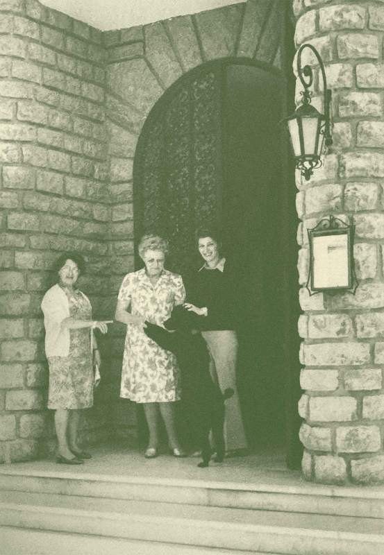
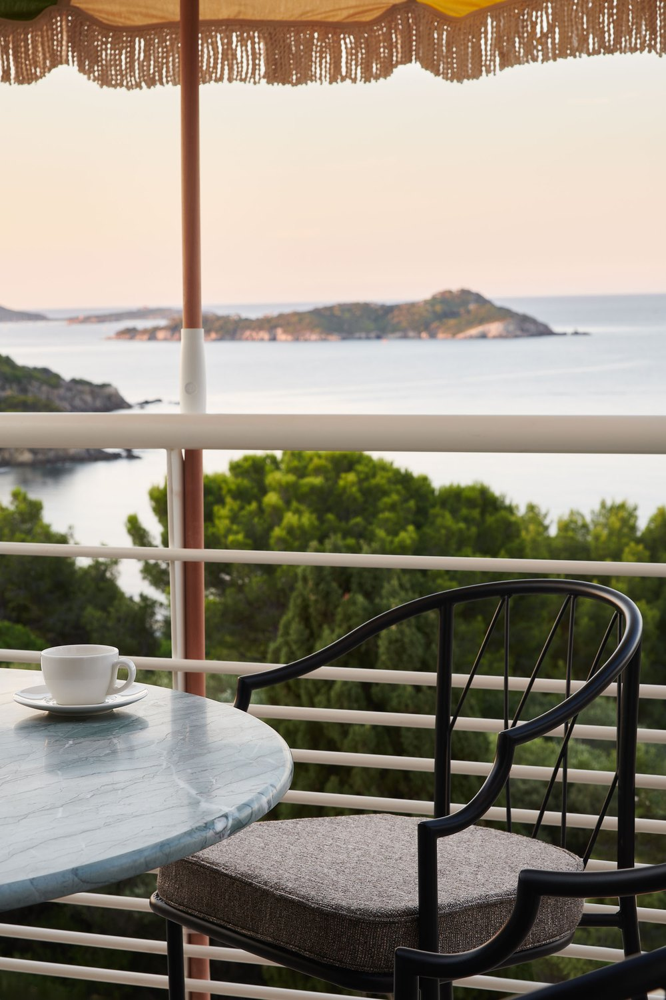

Hôtel Le Provençal, avis : soixante-quinze ans sur la presqu'île, et un spa de trois semaines
On présente Le Provençal comme un hôtel des années 1950 qu'on vient de rénover. C'est plus intéressant que cela : une maison de 1951, restée dans la même famille sur trois générations, dont la piscine a été creusée dans la falaise en 1962 et dont l'espace bien-être a ouvert le 1er août.

Une chambre vue mer après la rénovation : bureau sur mesure, lampe de galets, miroir ovale, et le poste de radio à la place du téléviseur. Photo : site officiel de la maison.
TL;DR : l'essentielScore LMHS 8,8/10, Indice Azur 4,4/5
- 37 chambres et 4 suites, soit 41 clés, plus La Résidence et ses 23 appartements dans trois villas à quatre cents mètres. Un domaine de deux hectares en bord de mer, une plage privée, un court de tennis, et la piscine d'eau de mer creusée à flanc de falaise en 1962.
- Six points de restauration, pas trois. Quatre tables, La Rascasse, La Brasserie, Le Bar du Soleil et Le Barbecue, plus deux comptoirs, la Villa Barret et Le Panoramique. Cuisine dirigée par Sébastien Graize.
- Un espace bien-être vient d'ouvrir, le 1er août 2026. « Les Bains » réunit un hammam, un sauna et un bain froid. L'accès est réservé aux clients de la maison, à raison d'une heure incluse par nuitée. Presque aucun article ne le mentionne encore.
Avis documentaire. Nous n'avons pas dormi au Provençal. Les éléments de cette page ont été relevés le 24 août 2026 sur le site officiel de la maison, page par page. Aucun tarif n'est publié.
Une maison de 1951, trois générations, et jamais de vente
La formule qu'on lit partout, « fondé dans les années 1950 », escamote ce qui fait l'intérêt de cette adresse. La maison publie sa propre chronologie, et elle est précise.
En 1951, Marius Michel, chef varois passé par le Lido, achète ce que la maison appelle elle-même « un modeste hôtel sur la presqu'île de Giens ». Il confie le chantier à l'architecte Lucien David, qui mène six années de travaux avant l'ouverture d'un établissement classé 4 étoiles. En 1962, la piscine d'eau de mer est creusée à flanc de falaise : ce n'est pas un aménagement récent, c'est un ouvrage de plus de soixante ans. Le paysagiste Jean Mus façonne le parc.
Le détail qui manque à tous les portraits de cette maison : c'est Jeanne Boubal, belle-sœur du fondateur, qui en assure la direction pendant trente ans. En 1979, Claude Michel, fille de Marius, et Jean-Paul Piffet, pâtissier parisien, reprennent l'établissement, créent La Résidence et développent la table. Depuis 2012, ce sont Damien et Benjamin Piffet, petits-fils du fondateur, accompagnés de Julie Liger et Lene Arentsen, qui conduisent la maison. Benjamin poursuit la tradition pâtissière de son père, Damien supervise la renaissance.
Soixante-quinze ans, trois générations, et pas une vente. Sur un littoral où la plupart des maisons historiques ont changé de mains deux ou trois fois en vingt ans, souvent au profit de fonds, c'est en soi une donnée. Cela explique aussi pourquoi la rénovation confiée au designer Rodolphe Parente et achevée début juillet 2026 n'a pas produit un hôtel générique : on ne rénove pas de la même façon une maison que l'on a reçue et un actif que l'on a acheté.

Photographie d'archive publiée par la maison. Le perron, la lanterne et le parement de pierre sont toujours là. Photo : site officiel.
Deux hectares, une plage privée, et une piscine taillée dans la roche
Ce qui distingue Le Provençal d'un hôtel de bord de mer ordinaire tient à l'échelle du terrain. Le domaine couvre deux hectares en bord de mer, sous pinède, et il descend jusqu'à l'eau. On y trouve une plage privée, un court de tennis, et la piscine d'eau de mer creusée dans la roche, suspendue au-dessus de la Méditerranée, qui est la signature de la maison depuis 1962.
Un point que nous devons souligner parce qu'il est rare et qu'il engage : l'établissement est labellisé Esprit Parc National, au sein du Parc national de Port-Cros. C'est la même marque que porte La Grange aux Marmottes dans notre sélection pyrénéenne, et elle repose sur des critères environnementaux audités, pas sur une déclaration d'intention. Sur un littoral aussi construit que celui du Var, un domaine de deux hectares tenu sous ce label n'est pas un détail de communication.
« Les Bains », l'information que presque personne n'a encore écrite
C'est la découverte de cette vérification, et elle est datée : la maison a ouvert son espace bien-être le 1er août 2026. Il s'appelle « Les Bains », et il réunit un hammam, un sauna et un bain froid. La maison le décrit comme un lieu intimiste, baigné par la lumière de la presqu'île.
La carte des soins sort du registre habituel des spas d'hôtel de bord de mer : massages sur mesure et rituels visage, mais aussi sonothérapie et séances de respiration. Et le bain froid mérite qu'on s'y arrête, parce que c'est un équipement que nous voyons apparaître partout depuis deux ans, à Paris où il fait l'objet de notre classement des spas à bain froid, et jusqu'en station de montagne. Le voir arriver dans un 4 étoiles varois de soixante-quinze ans dit quelque chose de la vitesse à laquelle cette pratique s'installe.
Les conditions d'accès sont à connaître avant de réserver, et elles sont strictes : « Les Bains » est réservé à la clientèle hébergée, et chaque nuitée donne droit à une heure d'accès. Ce n'est pas un spa où l'on passe l'après-midi, c'est une parenthèse cadrée. Pour un établissement de 41 clés, c'est cohérent, mais mieux vaut le savoir que le découvrir.
Six points de restauration, et non trois comme on le lit
C'est l'autre correction que nous devons apporter à ce qui circule sur cette maison. On décrit régulièrement Le Provençal comme un hôtel à trois restaurants. Le site officiel en publie six, répartis entre quatre tables et deux comptoirs, et l'ensemble est dirigé par le chef Sébastien Graize, avec Benjamin Piffet et Léonardo Di Teodoro à la pâtisserie.
| Adresse | Registre | Où | Saison |
|---|---|---|---|
| La Rascasse | Gastronomique, Provence et terroir local | Dans l'hôtel | Toute la saison |
| La Brasserie | Brasserie, terrasse de plain-pied | Côté village, près de l'église | Toute la saison |
| Le Bar du Soleil | Partage, déjeuner et apéritif | Dans le parc | Toute la saison |
| Le Barbecue | Grillades | Dans le parc | Tout l'été |
| Villa Barret | Tapas | Sur le domaine | Saisonnier |
| Le Panoramique | Apéritifs face à la mer | Sur le domaine | Saisonnier |
Relevé le 24 août 2026 sur le site officiel de la maison. Seule la saisonnalité du Barbecue est explicitement publiée.
Ce qui rend cette organisation intéressante n'est pas le nombre, c'est la distribution. La Brasserie est côté village, sa terrasse donne de plain-pied sur la place, près de l'église : elle est fréquentée par les habitants de Giens autant que par les clients. Les autres sont dans le parc ou sur le domaine, donc tournées vers la mer. Une maison qui garde une adresse ouverte sur la place du village, c'est ce qui distingue un hôtel intégré d'un hôtel posé.

La Rascasse, la table gastronomique de la maison. Photo : site officiel.
Quarante et une clés, et vingt-trois appartements en plus
La capacité mérite d'être détaillée, parce que le chiffre unique qu'on cite ailleurs en masque la moitié. L'hôtel compte 37 chambres et 4 suites, soit 41 clés. Mais la maison exploite en outre La Résidence, créée à la génération précédente : 23 appartements répartis dans trois villas, à quatre cents mètres de l'hôtel. Pour un séjour en famille ou à plusieurs couples, c'est une option que peu d'adresses varoises de ce niveau proposent.
Côté chambres, la rénovation de Rodolphe Parente rejoue les années 1950 sans les singer : mobilier sur mesure, tonalités naturelles, lampes de galets, miroirs ovales, art contemporain accroché sans cérémonie. Le détail que tout le monde cite est vrai et il se voit sur les photographies de la maison : pas de téléviseur, mais un poste de radio.
Notre note, et où elle place la maison
Nous attribuons au Provençal un Score LMHS de 8,8/10 et un Indice Azur de 4,4/5. C'est la première fois que nous notons cette adresse.
Ce qui pousse la note aussi haut pour un 4 étoiles : un domaine de deux hectares avec plage privée qu'aucun nouveau projet ne pourrait constituer aujourd'hui sur ce littoral, une piscine d'eau de mer creusée dans la roche depuis soixante ans, six points de restauration sous une direction de cuisine unique, un espace bien-être neuf, un label Esprit Parc National, et une continuité familiale de trois générations. À titre de comparaison, l' Hôtel Casarose, l'autre 4 étoiles varois et azuréen de notre base, est à 8,6/10.
Ce qui la retient sous les 5 étoiles de notre palmarès azuréen : le classement lui-même, quatre étoiles et non cinq, et surtout l'accès très encadré à l'espace bien-être, une heure par nuitée et rien pour les visiteurs extérieurs. Sur un site qui classe des hôtels avec spa, un parcours humide qui se consomme au chronomètre pèse dans la balance, même quand il vient d'ouvrir et qu'il est bien fait.
L'Indice Azur à 4,4/5 mesure autre chose : ce qui fait qu'une adresse appartient vraiment à ce littoral. La presqu'île de Giens, la pinède, l'eau de mer dans le bassin, la place du village et les îles en face. C'est très haut, au-dessus du Casarose et de sa partition balnéaire à 3,9/5, et un cran sous le Château de la Chèvre d'Or et ses 4,7/5, qui jouent la carte du village perché.
Le mot de SwannCe qu'on ne peut plus construire
Il y a deux façons d'arriver à une adresse comme celle-ci. La première consiste à l'acheter, la vider et la rouvrir sous un nom qui teste bien. La seconde consiste à l'avoir reçue, et à devoir composer avec ce que trois générations ont laissé, y compris ce qui ne se referait pas aujourd'hui. Le Provençal est du second type, et cela s'entend dans les choix : on ne creuse plus une piscine dans une falaise en bord de mer en 2026, on ne réunit plus deux hectares de littoral varois, on ne garde plus une brasserie ouverte sur la place du village quand on peut la tourner vers la clientèle qui paie la chambre. Ce que la rénovation a bien compris, c'est qu'il fallait ajouter sans retrancher : un espace bien-être neuf, des chambres refaites, et le poste de radio à la place de l'écran. Une réserve, la seule, et elle est réelle pour nos lecteurs : une heure de spa par nuitée, cela se calcule avant d'arriver. Réserve d'usage, enfin : nous n'avons pas dormi ici. L'histoire, les capacités, les tables et les équipements se vérifient sur pièces. Le service, non, et nous ne le jugeons pas.
Swann Bertaud, rédacteur hôtellerie de luxe
Infos pratiques et accès
| Adresse | 113 place Saint-Pierre, 83400 Hyères, presqu'île de Giens |
| Téléphone | +33 4 98 04 54 54 |
| Réservations | reservation@provencalhotel.com |
| Classement | 4 étoiles · Esprit Parc National, Parc national de Port-Cros |
| Capacité | 37 chambres et 4 suites, soit 41 clés |
| La Résidence | 23 appartements dans trois villas, à 400 m de l'hôtel |
| Domaine | 2 hectares en bord de mer, pinède, plage privée, court de tennis |
| Piscine | Eau de mer, creusée à flanc de falaise en 1962 |
| Bien-être | « Les Bains », ouvert le 1er août 2026 : hammam, sauna, bain froid. Clientèle hébergée uniquement, 1 heure incluse par nuitée |
| Soins | Massages sur mesure, rituels visage, sonothérapie, séances de respiration |
| Tables | La Rascasse, La Brasserie, Le Bar du Soleil, Le Barbecue, plus la Villa Barret et Le Panoramique |
| Cuisine | Chef Sébastien Graize. Pâtisserie : Benjamin Piffet et Léonardo Di Teodoro |
| Rénovation | Rodolphe Parente, achevée début juillet 2026 |
| Histoire | Fondé en 1951 par Marius Michel, architecte Lucien David, parc de Jean Mus. Même famille depuis trois générations |
| Tarifs | Non publiés sur cette page |
| Score LMHS | 8,8/10 · Indice Azur 4,4/5 |
La presqu'île de Giens ferme la rade d'Hyères et regarde les Îles d'Or, Porquerolles en premier, dont les navettes partent de la Tour Fondue, à l'extrémité de la presqu'île. Entre les deux bras de la presqu'île s'étendent les salins et la plage de l'Almanarre, l'un des meilleurs plans d'eau français pour la planche et le kite.
FAQ : Hôtel Le Provençal
Le Provençal a-t-il un spa ?
Oui, et il est très récent : l'espace bien-être « Les Bains » a ouvert le 1er août 2026. Il réunit un hammam, un sauna et un bain froid, avec une carte de soins comprenant massages sur mesure, rituels visage, sonothérapie et séances de respiration. Attention aux conditions d'accès : il est réservé à la clientèle hébergée, et chaque nuitée réservée donne droit à une heure d'accès. Les visiteurs extérieurs n'y entrent pas.
Combien de chambres compte l'hôtel Le Provençal ?
37 chambres et 4 suites, soit 41 clés. La maison exploite en outre La Résidence, créée à la génération précédente : 23 appartements répartis dans trois villas, à quatre cents mètres de l'hôtel. C'est une option utile pour un séjour en famille ou à plusieurs couples, et elle est rarement mentionnée.
Combien de restaurants compte Le Provençal ?
Six points de restauration, et non trois comme on le lit souvent. Quatre tables : La Rascasse, la gastronomique, dans l'hôtel ; La Brasserie, côté village, avec sa terrasse de plain-pied près de l'église ; Le Bar du Soleil et Le Barbecue, tous deux dans le parc, le second l'été seulement. S'y ajoutent deux comptoirs, la Villa Barret pour les tapas et Le Panoramique pour l'apéritif face à la mer. L'ensemble est dirigé par le chef Sébastien Graize, avec Benjamin Piffet et Léonardo Di Teodoro à la pâtisserie.
Quelle est l'histoire de l'hôtel Le Provençal ?
Elle commence en 1951, quand Marius Michel, chef varois passé par le Lido, achète un modeste hôtel sur la presqu'île. L'architecte Lucien David mène six années de travaux avant l'ouverture d'un 4 étoiles. En 1962, la piscine d'eau de mer est creusée à flanc de falaise, et le paysagiste Jean Mus façonne le parc. Jeanne Boubal, belle-sœur du fondateur, dirige la maison pendant trente ans. En 1979, Claude Michel et Jean-Paul Piffet reprennent l'établissement et créent La Résidence. Depuis 2012, ce sont Damien et Benjamin Piffet, petits-fils du fondateur, avec Julie Liger et Lene Arentsen. Trois générations, aucune vente.
Qui a rénové l'hôtel Le Provençal ?
Le designer Rodolphe Parente, pour une rénovation achevée début juillet 2026. Elle rejoue le vocabulaire des années 1950 sans le pasticher : mobilier sur mesure, tonalités naturelles, lampes de galets, miroirs ovales, art contemporain. Détail devenu la signature de la maison et qui se vérifie sur ses photographies : pas de téléviseur dans les chambres, mais un poste de radio.
Y a-t-il une plage à l'hôtel Le Provençal ?
Oui. Le domaine couvre deux hectares en bord de mer sous pinède, avec une plage privée, un court de tennis et la piscine d'eau de mer creusée dans la roche en 1962, suspendue au-dessus de la Méditerranée. La maison est par ailleurs labellisée Esprit Parc National, au sein du Parc national de Port-Cros, un label fondé sur des critères environnementaux audités.
Méthode et sources
Avis documentaire, sans séjour de contrôle, et nous ne prétendons pas le contraire. Le Score LMHS sur 10 relève de la grille LMHS Destination ; l'Indice Azur sur 5 est celui de nos avis de ce littoral, déjà employé pour l'Hôtel Casarose et le Château de la Chèvre d'Or. C'est la première fois que nous notons cette adresse, aucune reprise n'était donc requise. Adresse, téléphone, courriel, capacité de l'hôtel et de La Résidence, chronologie de la maison, noms des tables et de la direction de cuisine, composition et conditions d'accès de l'espace bien-être, superficie du domaine et labels relevés le 24 août 2026 sur le site officiel de la maison, page par page, y compris ses pages Histoire, Restaurants et Bien-être. Aucun tarif n'est publié : la maison n'affiche pas de grille en ligne, et les fourchettes disponibles ailleurs varient selon la saison et la catégorie. Aucune note de plateforme d'avis n'est reprise : nous ne collectons pas d'avis clients, et un média ne publie pas en données structurées une moyenne qu'il n'a pas produite. Aucun partenariat commercial, aucune affiliation, aucun lien de réservation rémunéré, aucun séjour offert. Photographies : site officiel de la maison.
Pour aller plus loin
- Hôtels de charme sur la Côte d'Azur : 12 adresses testées
- Château de la Chèvre d'Or, avis : le 5 étoiles suspendu au-dessus d'Èze
- Hôtel Casarose, avis : le 4 étoiles qui ne ferme jamais, l'autre 4 étoiles de notre base azuréenne
- Meilleur spa sur la Côte d'Azur : 10 adresses classées
- Spas avec bain froid à Paris : 5 adresses testées, pour situer le bain froid des Bains
- Notre méthode, les grilles de notation et les règles d'indépendance